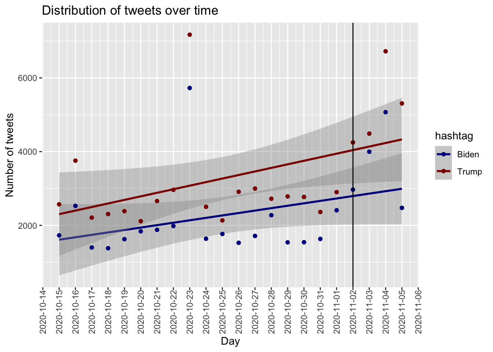
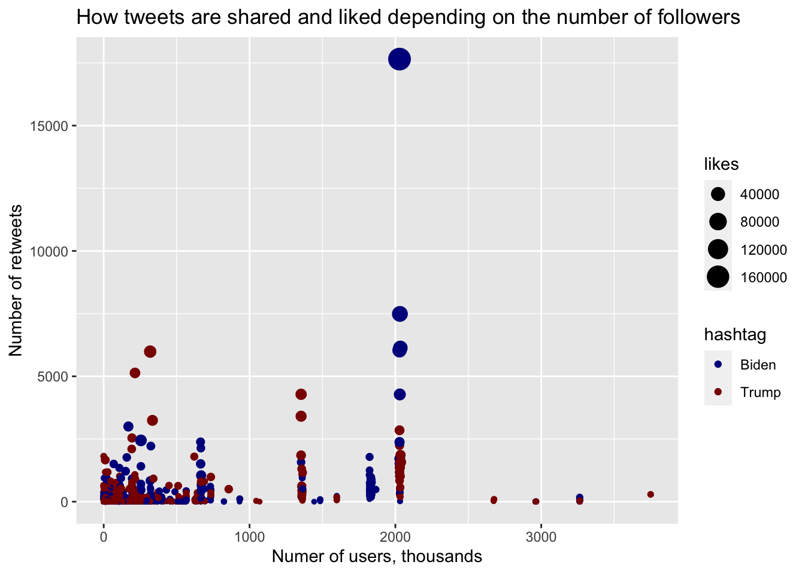
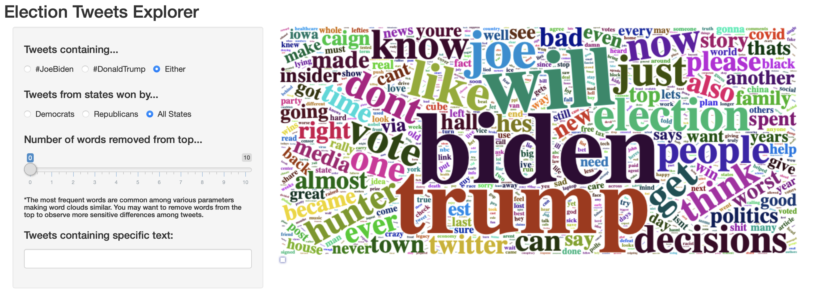

Questions to consider: What questions are you trying to answer? How did these questions evolve over the course of the project? What new questions did you consider in the course of your analysis?
In this project, we will:
Compare tweets of #Biden/#Trump by county/state and US polls to see if tweets are more accurate of predicting presidential results. We will make a choropleth map to visualize states that tweeted #Biden and #Trump and compare it to the 2020 election outcome. We will do the same with the polls.
Explore possible correlations between Twitter election-related post and their features (e.g. tweet share, likes) and election results.
Suggested Plot/Charts at Proposal:
Projected Challenges during Proposal:
Questions to consider: scraping method, cleaning, etc.
We used several datasets available online in this project. The data wrangling process, and dataframes created are described along with each section of the exploratory analysis and visualizations performed. Here is a list of the datasets used for this project:
Polls were summarized by taking the mean of the expected votes per candidate in the 3 days leading up to the election (November 1-3) prior to displaying data visualization.
This dataset contains county- and state-level data from 2020 US Election.
Two datasets constructed from scraping Twitter for tweets either containing #Biden (or #JoeBiden) or containing #Trump (or #DonaldTrump) from Oct 15th through Nov 8th.
Things to consider: Visualizations, summaries, and exploratory statistical analyses. Justify the steps you took, and show any major changes to your ideas.
The polls dataset containing the final state-level toplines on each day was downloaded as a .csv file and imported into R. The following variables of interest were selected into our dataframe for merging, exploratory analysis and data visualization:
state. Name of the statemodeldate. Date of the model runwinstate_inc. Chance the incumbent will win the statewinstate_chal. Chance the challenger will win the statevoteshare_inc. Forecasted vote share for the incumbentvoteshare_chal. Forecasted vote share for the challengermargin. Forecasted margin for the incumbentstate_turnout. Forecasted state-level voter turnout based on past turnout, estimates of population growth, polls about whether voters are more or less enthusiastic about the election than usual and other factors in each state.The voteshare and winstate variables to indicate Biden or Trump and converted the date variable converted into 3 columns: month, day and year. The polls dataset was merged with US regional dataset on the state variable prior to calculating each candidate’s raw votes in each state by multplying the proportion of votes by the state’s expected total voter turn out. To simplify the dataset, we took the mean of the first 3 days of November (1-3) for all the numeric variables to use in various plots and data visualizations. All other months were excluded for the polls dataset for exploratory analysis.
We explored the relationship between key campaign events including controversies, medical events, and endorsements and a candidate’s polling performance. The list of candidates was narrowed down to the three frontrunner candidates with most of the media coverage. We had originally planned to look at each candidate but it became difficult to find major campaign events for low polling candidates. We also decided to look into the relationship between the number of endorsements per candidate and their current polling performance after reading additional research on how well the number of endorsements predicts nomination to the general election. It is hard to determine whether these events were truly the reason for a drop or gain in polling percent because other factors such as debate performance, candidate fatigue and advertising and therefore our analysis is purely exploratory.
We also discussed several approaches to the exploratory analysis of debate factors affecting polling performance. Originally, we chose an approach in which we would compile debate indicators across debates one through four and examine their association with candidates’ polling percent change over that time period. However, we realized that many other factors besides debate-related variables were likely to affect polling numbers over that period of time. We ultimately decided to focus on the fourth debate because we believe the percent change in polling numbers directly before and after a single debate is more likely to reflect debate performance.
Although we believe focusing on one debate is valuable, we anticipated that it may be difficult to observe meaningful trends due to the small sample size. Additionally, we understand that certain debate-related factors that influence voting behavior may be less quantifiable than variables such as airtime and Trump mentions. We therefore chose to explore Google Search behavior as a secondary indicator of the impact that debate performance has on public perceptions of Democratic presidential candidates. We decided to choose key events from each debate to look at using Google Search behavior in the days immediately following the debates. These events were as follows: Kamala Harris’ comments toward Joe Biden in the first debate about his previous opposition to school busing programs, Bernie Sanders’ memorable comment that he “wrote the damn bill” in the second debate, Beto O’Rourke’s comment of “hell yes” to gun buy-back programs in the third debate, and Andrew Yang and Kamala Harris bringing up Universal Basic Income and reproductive rights, respectively, in the fourth debate. We also decided to compare Yang and Harris after the fourth debate to further compare their debate performances. We initially thought about instead looking at the 24 hours preceding and following the debates. However, we realized that a longer timeframe would give us a better understanding of behavior changes by allowing us to see if they were sustained over time so we looked at daily data for the week preceding and following each debate. Analysis was very exploratory in nature, and search volume was visualized using spaghetti plots.
Finally, there is significant interest in which democratic candidate will eventually go head to head with President Trump in the 2020 presidential election, so we explored polling results in two key states, IA and PA. The list of candidates was limited to the four polling highest in the states who are still in the race: Biden, Sanders, Warren, and Buttigieg. It became difficult to assess polling for candidates in Pennsylvania as opposed to Iowa, as polling data for several candidates was not as varied, which means the spread of polling results was not easily visualizable. This may be due to voters not having as clear of a picture of who will be a realistic contender that late in the race, as Pennsylvania’s primary will happen in April, as opposed to Iowa’s early February caucus. In addition to looking at Google Search behavior following debates at the national level, we also explored how searches for these top candidates varied (or didn’t) between the two states over the course of this year to see if voters exhibited a strong interest or preference in any particular candidate and if these fluctuations coincided with key events like debates.
Insert text here
Insert text here
Because the 2020 Eelection Twitter datasets were large we droped missing data and divided each dataset into two subsets to be able to store them within our repository.
read_csv("./datasets/hashtag_donaldtrump.csv") %>%
drop_na() %>%
slice(seq(0.5 * n())) %>%
write.csv("./datasets/trump1.csv")
read_csv("./datasets/hashtag_donaldtrump.csv") %>%
drop_na() %>%
slice(-seq(0.5 * n())) %>%
write.csv("./datasets/trump2.csv")
read_csv("./datasets/hashtag_joebiden.csv") %>%
drop_na() %>%
slice(seq(0.5 * n())) %>%
write.csv("./datasets/biden1.csv")
read_csv("./datasets/hashtag_joebiden.csv") %>%
drop_na() %>%
slice(-seq(0.5 * n())) %>%
write.csv("./datasets/biden2.csv")Then, data was imported, merged, and cleaned, especially date of creation of the tweet, for further analysis. We further limited our analysis to tweets from users registered within the U.S. and with only one of the cadidates hashtags (i.e.: we excluded tweets containing both #Trump/#DonaldTrump and #Biden/#JoeBiden).
#Trump / #DonaldTrump tweets
trump_df =
merge(
read_csv("./datasets/trump1.csv"),
read_csv("./datasets/trump2.csv"),
all = TRUE
) %>%
select(!X1) %>%
separate(created_at, into = c("creation_date", "creation_time"), sep = " ") %>%
separate(creation_date, into = c("creation_year", "creation_month", "creation_day"), sep = "-") %>%
separate(user_join_date, into = c("join_date", "join_time"), sep = " ") %>%
separate(join_date, into = c("join_year", "join_month", "join_day"), sep = "-") %>%
mutate(hashtag = "Trump")
#Biden / #JoeBiden tweets
biden_df =
merge(
read_csv("./datasets/biden1.csv"),
read_csv("./datasets/biden2.csv"),
all = TRUE
) %>%
select(!X1) %>%
separate(created_at, into = c("creation_date", "creation_time"), sep = " ") %>%
separate(creation_date, into = c("creation_year", "creation_month", "creation_day"), sep = "-") %>%
separate(user_join_date, into = c("join_date", "join_time"), sep = " ") %>%
separate(join_date, into = c("join_year", "join_month", "join_day"), sep = "-") %>%
mutate(hashtag = "Biden")
# Subset of USA tweets from US-registered users only
tweets_usa = # N = 140263 tweets
merge(biden_df, trump_df, all = TRUE) %>%
filter(country == "United States of America") %>%
distinct(tweet, .keep_all = TRUE) # N = 123635 (16628 tweets removed containing both hashtags)The dataframe used in this section tweets_usa have 28 columns with the relevant variables used in this report as follows:
creation_year, creation_month,creation_day, and creation_time. Date and time of tweet creation.tweet. Full tweet text.likes. Number of likes.retweet_count. Number of retweets.user_followers_count. Followers count on user account at the time of tweet creation.lat and long. Latitude and longitude parsed from user location.city, state, and state_code. City and state from user location.hashtag. Whether tweet contains #Biden or #Trump.We added state election-related variables from the 2020 election results dataset to the tweets_usa dataframe. The final dataframe main_tweets_usa used to construct word clouds - see Additional Analysis section below - has the following extra variables:
winner_party and winner_candidate. Party and candidate who won the election in each state.party_total. Total number of votes for the party.state_total. Total number of votes for the party in each state.election_df =
read_csv("./datasets/president_county_candidate.csv") %>%
group_by(state, party) %>%
mutate(party_total = sum(total_votes)) %>%
ungroup() %>%
group_by(state) %>%
mutate(state_winner = case_when(
party_total == max(party_total) ~ TRUE,
party_total != max(party_total) ~ FALSE),
state_total = sum(total_votes)
)
state_election_df =
election_df %>%
filter(state_winner == TRUE) %>%
select(state, candidate, party, party_total, state_total) %>%
distinct()
main_tweets_usa =
left_join(tweets_usa, state_election_df, by = "state") %>%
rename(
winner_candidate = candidate,
winner_party = party
)We then explored the data to characterize the distribution of tweets across different locations and time to see if there were any patterns or trends. We first plot the distribution of Biden and Trump tweets across states.
tweets_usa %>%
group_by(state, hashtag)%>%
summarise(count = n()) %>%
ggplot() +
geom_col(aes(x=state, y=count, fill = hashtag ), position = "dodge") +
theme(axis.text.x = element_text(angle = 90, vjust = 0.5, hjust=1)) +
labs (title = "Distribution of tweets across US states") +
scale_fill_manual(values = colors)We observe abnormal distribution of tweets density across states with California and New York being the most active states with more than 15,000 tweets during October-November. That aligns with our prior expectations. Other active states included Florida and Texas, which was unexpected. Overall, more urban states tended to be more active on discussing candidates. Almost in each state Trump gained more attention with Ohio being the only exception.
We then looked at the distribution of tweets across time and attempted to estimate if there is a significant difference in hashtag use over time between the two candidates.
tweets_usa %>%
mutate(date = as.Date(paste(creation_month, creation_day, '2020', sep = "/"), format = "%m/%d/%y")) %>%
group_by (date, hashtag) %>%
summarise(count = n()) %>%
ggplot(aes(x=date,y=count,color = hashtag)) +
geom_smooth(method = "lm") +
geom_point(aes(x=date, y=count, color = hashtag)) +
geom_vline(xintercept = as.Date("2020-11-02")) +
theme(axis.text.x = element_text(angle = 90, vjust = 0.5, hjust=1)) +
scale_x_date(date_breaks = '1 day') +
labs (title = "Distribution of tweets over time",
x = "Day",
y = "Number of tweets") +
scale_color_manual(values = colors)
We saw that there is an increase in tweets over time with a peak two days aafter the election day when the preliminary results were revealed. Biden was mentioned less frequently at each time point except for Novemeber 4. Although the difference wasn’t statistically significant, we observed several outliers with unusually high rate of tweets with #Trump hashtag (October 16 and October 23).
We saw that Trump was mentioned more often. But who talked about him? As the next step, we wanted to look at the correlation between user popularity (authority) and candidates this user mentions. As a proxy for user’s popularity we selected the number of followers. to characterize tweets we multiplied the number of likes per tweet with a number of re-shares to reflect on how much attention a tweet gained. We plotted the data with number of user’s followers on X axis and number of re-shares on Y axis. Each dot represented a tweet and its size correlated with the number of likes.
#tweets_usa %>%
#select (user_followers_count) %>%
# arrange(desc(user_followers_count))
tweets_usa %>%
group_by(hashtag)%>%
filter (retweet_count>0 & likes>0) %>%
filter (user_followers_count<=3750110) %>%# filter outliers
mutate(user_followers_count = user_followers_count/1000) %>%
ggplot() +
geom_point(aes(x= user_followers_count , y= retweet_count, color = hashtag, size = likes )) +
labs (title = "How tweets are shared and liked depending on the number of followers",
x = "Numer of users, thousands",
y = "Number of retweets") +
scale_color_manual(values = colors)
We observed that the users with a lot of followers tweeted about Trump more than about Biden. On the other hand, those tweets were not popular - they were not liked or re-shared. On the other hand, there are popular tweets related to Biden with a lot of likes and re-tweets (in the middle of the plot). Regardless of the number of followers or re-tweets, messages about Trump are significantly less liked.
Interestingly enough, we saw that California not only talked about Trump more, but also re-shared and liked tweets with Trump more (regardless of the tone of those tweets). New York, on the other hand, liked and shared tweets primarily about Biden. In fact, no strong correlation between tweet behavior and electorate attitude can be observed.
usa_map <- map_data("state")
tweet_map <- tweets_usa %>%
group_by(state, hashtag) %>%
summarise(count = n(),
likes = sum(likes)) %>%
mutate (likes_tweets = likes*count,
region = tolower(state)) %>%
select (region, hashtag, likes_tweets) %>%
pivot_wider(names_from = "hashtag",
values_from = "likes_tweets") %>%
mutate(top = case_when(Biden>coalesce(Trump,0) ~ "Biden",
Trump>Biden ~ "Trump"))
states_tweet_map <- left_join(usa_map, tweet_map)
ggplot(data = states_tweet_map,
aes(x = long, y = lat,
group = group, fill = top)) +
geom_polygon(color = "gray90", size = 0.1) +
labs(title ="Most popular tweets across states") +
scale_fill_manual(values = colors)Given that New York was among the most active states, we wanted to look at the popular tweets in different boroughs. Unfortunately, the data only provided rough estimate of user location. Nevertheless, Bronx, Brooklyn and a part of Queens talked about Trump more.
NY <-tweets_usa %>%
filter (state_code == 'NY' & city == 'New York') %>%
filter (likes>10 & retweet_count>10) %>%
select (lat, long, hashtag, likes, retweet_count)
r <- GET('http://data.beta.nyc//dataset/0ff93d2d-90ba-457c-9f7e-39e47bf2ac5f/resource/35dd04fb-81b3-479b-a074-a27a37888ce7/download/d085e2f8d0b54d4590b1e7d1f35594c1pediacitiesnycneighborhoods.geojson')
nyc_neighborhoods <- readOGR(content(r,'text'), 'OGRGeoJSON', verbose = F)
NY_points <- NY
sp::coordinates(NY_points) <- ~long + lat
proj4string(NY_points) <- proj4string(nyc_neighborhoods)
matches <- over(NY_points, nyc_neighborhoods)
points <- cbind(NY, matches)
map_data <- geo_join(nyc_neighborhoods, points, "neighborhood", "neighborhood")
leaflet(map_data) %>%
addTiles() %>%
addPolygons(popup = ~hashtag) %>%
addMarkers(~long, ~lat, popup = ~hashtag, data = points) %>%
addProviderTiles("CartoDB.Positron") %>%
setView(-75, 40.75, zoom = 10)Things to consider: If you undertake formal statistical analyses, describe these in detail
We constructed an interactive shinyapp to display the most frequent words within tweets selected according to user-defined parameters in the form of word clouds. We used the tm package to clean tweet text of non-textual elements as well as stop words (both english and spanish). We developed a custom function wordcount_df that incorporates functions of this package and tidyverse elements to construct dataframes with a word and a freq column. This dataframe is the raw material for the wordcloud2 package. It has several functionalities to create word clouds and with the renderwordcloud2 function it can be incorporated into a shinyapp©.
Here is the code used to generate the app and a screenshot of the final product:
if (require(shiny)) {
library(tidyverse)
library(flexdashboard)
library(shiny)
library(wordcloud2)
library(tm)
library(rsconnect)
set.seed(1)
trump_df =
merge(
read_csv("./datasets/trump1.csv"),
read_csv("./datasets/trump2.csv"),
all = TRUE
) %>%
select(!X1) %>%
mutate(hashtag = "Trump")
biden_df =
merge(
read_csv("./datasets/biden1.csv"),
read_csv("./datasets/biden2.csv"),
all = TRUE
) %>%
select(!X1) %>%
mutate(hashtag = "Biden")
tweets_usa =
merge(biden_df, trump_df, all = TRUE) %>%
filter(country == "United States of America")
election_df =
read_csv("./datasets/president_county_candidate.csv") %>%
group_by(state, party) %>%
mutate(party_total = sum(total_votes)) %>%
ungroup() %>%
group_by(state) %>%
mutate(state_winner = case_when(
party_total == max(party_total) ~ TRUE,
party_total != max(party_total) ~ FALSE),
state_total = sum(total_votes)
)
state_election_df =
election_df %>%
filter(state_winner == TRUE) %>%
select(state, candidate, party, party_total, state_total) %>%
distinct()
main_tweets_usa =
left_join(tweets_usa, state_election_df, by = "state") %>%
rename(
winner_candidate = candidate,
winner_party = party
) %>%
select(tweet, hashtag, winner_party)
wordcount_df = function(df) {
if (!is.data.frame(df)) {
stop("Input must be a dataframe")
}
df_text =
df %>%
slice_head(n = 1000) %>%
select(tweet) %>%
mutate(
tweet = gsub("#[[:alpha:]]*", "", tweet),
tweet = gsub("@[[:alpha:]]*", "", tweet),
tweet = gsub("https\\S*", "", tweet),
tweet = gsub("http\\S*", "", tweet),
tweet = gsub("@\\S*", "", tweet),
tweet = gsub("amp", "", tweet),
tweet = gsub("[\r\n]", "", tweet),
tweet = gsub("[0-9]", "", tweet),
tweet = gsub("[[:punct:]]", "", tweet)
)
docs_df =
Corpus(VectorSource(df_text)) %>%
tm_map(removeNumbers) %>%
tm_map(removePunctuation) %>%
tm_map(stripWhitespace) %>%
tm_map(content_transformer(tolower)) %>%
tm_map(removeWords, stopwords("english")) %>%
tm_map(removeWords, stopwords("spanish"))
words_df =
TermDocumentMatrix(docs_df) %>%
as.matrix() %>%
rowSums() %>%
sort(decreasing = TRUE)
word_count_df = data.frame(word = names(words_df),freq = words_df)
return(word_count_df)
}
# Defining the UI
ui =
fluidPage(
titlePanel("Election Tweets Explorer"),
sidebarPanel(
radioButtons(
"Hashtag_choice",
h4("Tweets containing..."),
inline = TRUE,
choiceNames = list("#Biden/#JoeBiden", "#Trump/#DonaldTrump", "Either"),
choiceValues = list("Biden", "Trump", "Both"),
selected = "Both"
),
radioButtons(
"Party_choice",
h4("Tweets from states won by..."),
inline = TRUE,
choiceNames = list("Democrats", "Republicans", "All States"),
choiceValues = list("DEM", "REP", "Both"),
selected = "Both"
),
sliderInput(
"cut_top",
h4("Number of words removed from top..."),
min = 0, max = 10,
value = 3
),
h6("*Most frequent words are common among various parameters"),
textInput(
"word",
h4("Tweets containing specific text:"),
value = "",
width = NULL,
placeholder = NULL)),
mainPanel(wordcloud2Output('wordcloud2'), width = 8)
)
# Defining the server code
server =
function(input, output) {
output$wordcloud2 <- renderWordcloud2({
if (input[["word"]] == "") {
if (input[["Hashtag_choice"]] == "Both" & input[["Party_choice"]] == "Both") {
main_tweets_usa %>%
wordcount_df() %>%
slice_tail(n = nrow(.) - input[["cut_top"]]) %>%
wordcloud2(size = 1, color = 'random-dark', ellipticity = 1)
} else if (input[["Hashtag_choice"]] != "Both" & input[["Party_choice"]] != "Both") {
main_tweets_usa %>%
filter(
hashtag == input[["Hashtag_choice"]],
winner_party == input[["Party_choice"]]
) %>%
wordcount_df() %>%
slice_tail(n = nrow(.) - input[["cut_top"]]) %>%
wordcloud2(size = 1, color = 'random-dark', ellipticity = 1)
} else if (input[["Hashtag_choice"]] == "Both" & input[["Party_choice"]] != "Both") {
main_tweets_usa %>%
filter(
winner_party == input[["Party_choice"]]
) %>%
wordcount_df() %>%
slice_tail(n = nrow(.) - input[["cut_top"]]) %>%
wordcloud2(size = 1, color = 'random-dark', ellipticity = 1)
} else if (input[["Hashtag_choice"]] != "Both" & input[["Party_choice"]] == "Both") {
main_tweets_usa %>%
filter(
hashtag == input[["Hashtag_choice"]]
) %>%
wordcount_df() %>%
slice_tail(n = nrow(.) - input[["cut_top"]]) %>%
wordcloud2(size = 1, color = 'random-dark', ellipticity = 1)
}
} else {
if (input[["Hashtag_choice"]] == "Both" & input[["Party_choice"]] == "Both") {
main_tweets_usa %>%
filter(str_detect(tweet, input[["word"]])) %>%
wordcount_df() %>%
slice_tail(n = nrow(.) - input[["cut_top"]]) %>%
wordcloud2(size = 1, ellipticity = 1, color = 'random-dark')
} else if (input[["Hashtag_choice"]] != "Both" & input[["Party_choice"]] != "Both") {
main_tweets_usa %>%
filter(
str_detect(tweet, input[["word"]]),
hashtag == input[["Hashtag_choice"]],
winner_party == input[["Party_choice"]]
) %>%
wordcount_df() %>%
slice_tail(n = nrow(.) - input[["cut_top"]]) %>%
wordcloud2(size = 1, color = 'random-dark', ellipticity = 1)
} else if (input[["Hashtag_choice"]] == "Both" & input[["Party_choice"]] != "Both") {
main_tweets_usa %>%
filter(
str_detect(tweet, input[["word"]]),
winner_party == input[["Party_choice"]]
) %>%
wordcount_df() %>%
slice_tail(n = nrow(.) - input[["cut_top"]]) %>%
wordcloud2(size = 1, color = 'random-dark', ellipticity = 1)
} else if (input[["Hashtag_choice"]] != "Both" & input[["Party_choice"]] == "Both") {
main_tweets_usa %>%
filter(
str_detect(tweet, input[["word"]]),
hashtag == input[["Hashtag_choice"]]
) %>%
wordcount_df() %>%
slice_tail(n = nrow(.) - input[["cut_top"]]) %>%
wordcloud2(size = 1, color = 'random-dark', ellipticity = 1)
}
}
})
}
shinyApp(ui = ui, server = server)
}
Users can explore tweet’s most frequent words by hashtag, by twitter user account original state’s winner party, or by specific text present within the tweet. Because the most frequent words are common among various selected parameters, we opted to allow users to remove a certain number of words from the top of the list. By doing so, it is possible to observe more sensitive differences among tweets.
Questions to consider: What were your findings? Are they what you expect? What insights into the data can you make?
Polling. Due to the contentious nature of the 2020 election, mathematical models and mainstream media predicted voter turnout to shatter record books and be astronomically higher than recent presidential elections. We had two barplots, projected voter turnout by state and region, to compare with actual 2020 election results. While raw votes don’t win an election, Joe Biden was expected to have a higher voter turnout in 3 out of the 4 regions and thus the popular vote. When we observe the proportion of votes by states, President Trump was not expected to win any of the key battleground states: Arizona, Florida, Michigan, North Carolina, Pennsylvania and Wisconsin. However, Joe Biden’s projected margin of victory in North Carolina, Pennsylvannia and Florida were razor thin as seen in the voter margin bar graph. Florida, Michigan, Pennsylvania, and Wisconsin are regarded as the “Big Four” due to their high number of electoral votes. Ultimately, President Trump’s chances for re-election to a second term hinged on his ability to galvinize enough voters in these 6 key states.
Tweets. We obeserved in our election tweets exploration an uneven distribution of tweets density across states with California and New York being the most active states.This aligns with our prior expectations that overall, more urban states tend to be more active on discussing candidates. In most states (all but Ohio) Trump gained more attention. This is confirmed with our tweet word cloud exploration tool where independent of user defined parameters, the word Trump ranks top in terms of frequency within tweet text.
Looking at the distribution of tweets across time, we saw that there is an increase in tweets over time with a peak two days after the election day when the preliminary results were revealed. Biden was mentioned less frequently at each time point except for November 4 (SOME NEWS ABOUT SOMETHING THAT COULD JUSTIFY THAT). Interestingly, we observed several outliers with unusually high rate of tweets with #Trump hashtag on October 16 and October 23 - both after Presidential debates. Also, our findings suggest that the popular users (with a lot of followers) tweeted more about Trump than about Biden. On the other hand, those tweets were not as liked or as re-shared as tweets containing #Biden. Regardless of the number of followers or re-tweets, messages about Trump are significantly less liked. Interestingly enough, we saw that California not only talked about Trump more, but also re-shared and liked tweets with Trump more (regardless of the tone of those tweets). New York, on the other hand, liked and shared tweets primarily about Biden. This supports the idea that social media is tied to political behavior and that twitter can be an important adjunct to better understand communication patterns and political preferences of individuals.
Election Result Comparison. Our findings for the election results align with the poll anticipation, except for North Carolina and Florida, where Donald Trump won with a small proportion. In fact, except for North Carolina and Florida, Joe Biden has won the other battleground states: Arizona, Georgia,Michigan, Minnesota, Nevada, New Hampshire, Pennsylvania, and Wisconsin. Among these battleground states, Florida, Michigan, Pennsylvania, and Wisconsin are regarded as “Big Four” which are most likely to decide the electoral college. Among the “Big Four”, Joe Biden has won three of the states, which may consider as a key component for him to win the election.
Conversely, when looking solely at most prevalent hashtag (#Biden vs. #Trump), it was almost inverse to the actual state election results. We found that in 27 states the most tweeted candidate disagreed with the winner in that state. This might indicate that tweets relating to specific candidate are not necessarily positive but negative. A more granular analysis of the polarity of the tweet text could be achieved with analysis of word meanings and sentence formation. Based on a count analysis, tweets are not helpful in correlating with election results.
Limitations. We encountered several limitations throughout the development of the project. We were handling large volume of data that were being updated daily which forced us to define a end date for tweet analysis. This fact required us to slice our datasets to save on computation power and avoid that our website would take too long to render. As predicted, working with string variables, was challenging and our work was limited by the lack of experience of our team on working with this type of data. In that sense, our main limitation was the lack of in-depth analysis of actual tweet text content. In order to realistically access behavior and electorate attitude, and potentially investigate correlations and construct predictive models, a thorough sentiment analysis should be performed using machine learning tools.
Conclusion. Based on analysis performed among these three datasets, and in light of the limitations discussed, poll data far outperformed tweet data in terms of the 2020 presidential election.
Chankasaul, JR | de Araujo, Thiago | Kao, Chia-Wen| Ostropolets, Anna
2020